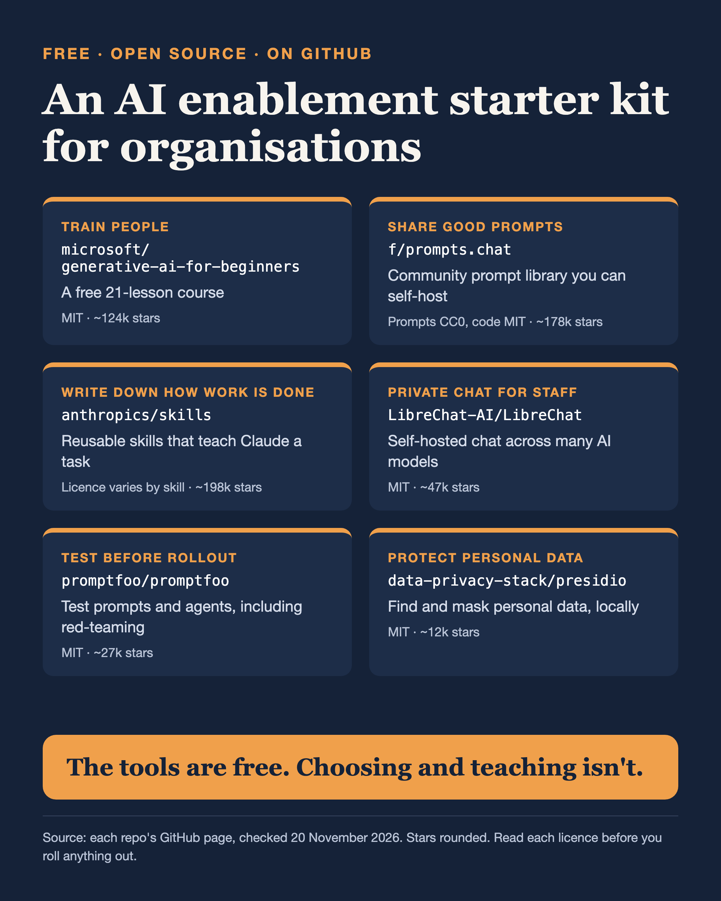

A free AI enablement starter kit
Most of what an organisation needs to start with AI is already free on GitHub. The hard part is choosing, setting it up and teaching it.
Here's the starter kit I'd hand an AI enablement team, one repo for each job:
Train people: microsoft/generative-ai-for-beginners, a free 21-lesson course.
Share good prompts: f/prompts.chat, a community prompt library you can self-host. The prompts are public domain (CC0).
Write down how work is done: anthropics/skills, reusable skills that teach Claude a task. Teams on GitHub Copilot can look at github/awesome-copilot.
Private chat for staff: LibreChat, a self-hosted chat tool that works across many AI models.
Test before rollout: promptfoo, for testing prompts and agents, including red-teaming.
Protect personal data: Presidio, which finds and masks personal data on your own machine. Microsoft started it, and the community now runs it.
Two cautions. Read each licence before anyone installs anything. anthropics/skills sets licences skill by skill, and the popular Open WebUI uses its own custom licence, which is why it isn't on this list. And self-hosting means someone owns the updates and the security.
The tools cost nothing. Choosing the right three, setting them up and teaching people to use them well is the actual work of AI enablement.
Tomorrow I'll show one of these running: masking personal data before it goes anywhere near an AI tool.
[YOUR STORY (optional): one of these you've used or recommended, and what happened]
